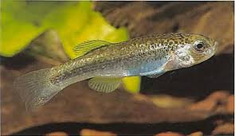
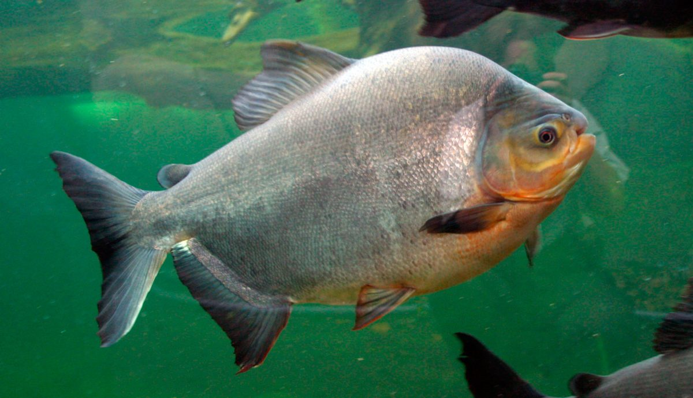
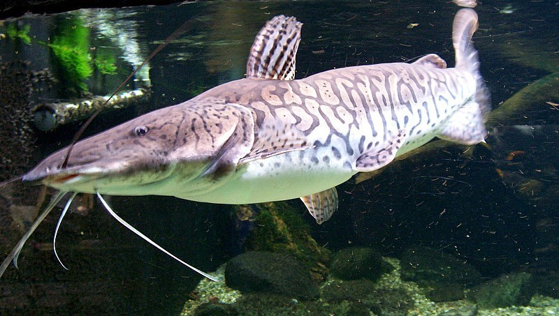
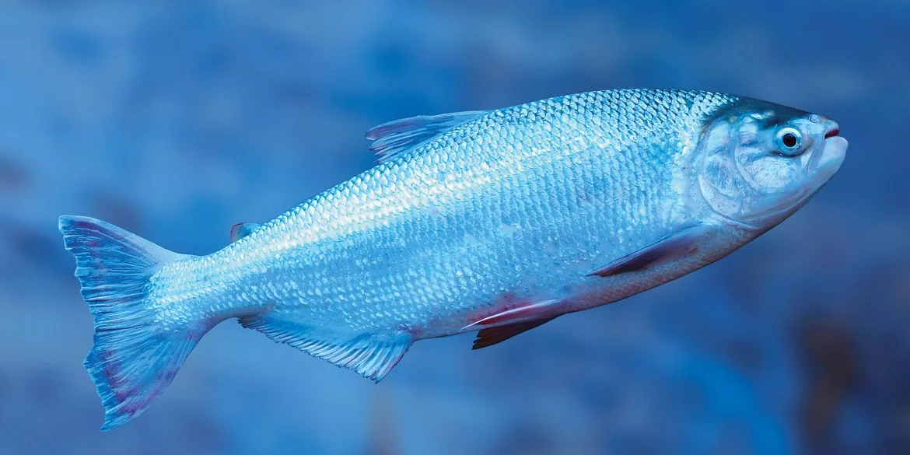
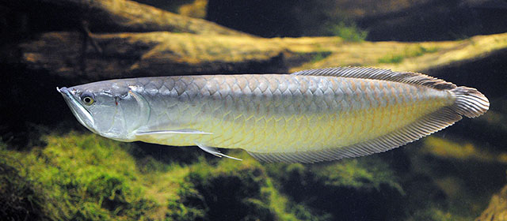

Karachi (Prochilodus lineatus)
Hábitat: Ríos del Amazonas y del Plata; zonas con corriente media y fondos arenosos.
Amenazas principales: Sobrepesca, contaminación por desechos industriales, represas que bloquean su migración.
Medidas de conservación: Regulación de pesca en temporada reproductiva, protección de rutas migratorias.
Rol ecológico: Filtrador natural que ayuda a mantener la calidad del agua y recicla materia orgánica.
Surubí (Pseudoplatystoma fasciatum)
Hábitat: Ríos de aguas cálidas del Amazonas y del Chaco.
Amenazas principales: Pesca intensiva, contaminación y construcción de represas.
Medidas de conservación: Vedas pesqueras y programas de reproducción en cautiverio.
Rol ecológico: Depredador tope que controla poblaciones de peces pequeños, manteniendo el equilibrio trófico.

Pacú (Colossoma macropomum)
Hábitat: Ríos amazónicos, lagunas y zonas inundables.
Amenazas principales: Sobreexplotación y contaminación por residuos mineros.
Medidas de conservación: Fomento de acuicultura sostenible y monitoreo de poblaciones silvestres.
Rol ecológico: Dispersor de semillas de árboles ribereños, favoreciendo la regeneración forestal.
Dorado (Salminus brasiliensis)
Hábitat: Grandes ríos de corriente rápida, como el Mamoré y el Pilcomayo.
Amenazas principales: Represas, pesca deportiva y comercial excesiva.
Medidas de conservación: Protección de rutas migratorias y regulación pesquera.
Rol ecológico: Especie depredadora clave en el control de peces medianos.

Bagre del Río Mamoré (Zungaro zungaro)
Hábitat: Grandes ríos amazónicos de aguas profundas.
Amenazas principales: Pesca descontrolada y represas hidroeléctricas.
Medidas de conservación: Regulación de capturas y estudios sobre su ciclo reproductivo.
Rol ecológico: Mantiene el equilibrio trófico controlando poblaciones de peces medianos.

Sábalo (Brycon amazonicus)
Hábitat: Ríos tropicales y llanuras inundables del Amazonas y del Beni.
Amenazas principales: Sobrepesca, pérdida de hábitats y contaminación.
Medidas de conservación: Control de temporadas de pesca y educación ambiental a comunidades ribereñas.
Rol ecológico: Especie migratoria que transporta nutrientes y mantiene el flujo ecológico del río.

Arawana (Osteoglossum bicirrhosum)
Hábitat: Lagos y ríos amazónicos con vegetación flotante.
Amenazas principales: Tráfico ilegal como pez ornamental y contaminación por mercurio.
Medidas de conservación: Control del comercio y educación sobre su rol ecológico.
Rol ecológico: Depredador de superficie que controla poblaciones de insectos y peces pequeños.
Anguila Boliviana (Synbranchus marmoratus)
Hábitat: Pantanos, lagunas y canales de agua lenta.
Amenazas principales: Contaminación y modificación de los cursos de agua.
Medidas de conservación: Restauración de humedales y control de vertidos contaminantes.
Rol ecológico: Contribuye al control de poblaciones de invertebrados acuáticos.
Piraña Roja (Pygocentrus nattereri)
Hábitat: Ríos y lagunas cálidas del Amazonas y el Beni.
Amenazas principales: Pesca intensiva y alteración del hábitat por deforestación.
Medidas de conservación: Educación sobre su función ecológica y regulación de captura.
Rol ecológico: Elimina organismos enfermos o muertos, manteniendo la salud del ecosistema.
Corvina del Lago Titicaca (Trichomycterus rivulatus)
Hábitat: Aguas frías y profundas del Lago Titicaca.
Amenazas principales: Introducción de especies exóticas (trucha y pejerrey) y contaminación.
Medidas de conservación: Protección del lago y monitoreo científico de poblaciones.
Rol ecológico: Parte esencial de la cadena alimenticia lacustre, contribuye al equilibrio del ecosistema altoandino.